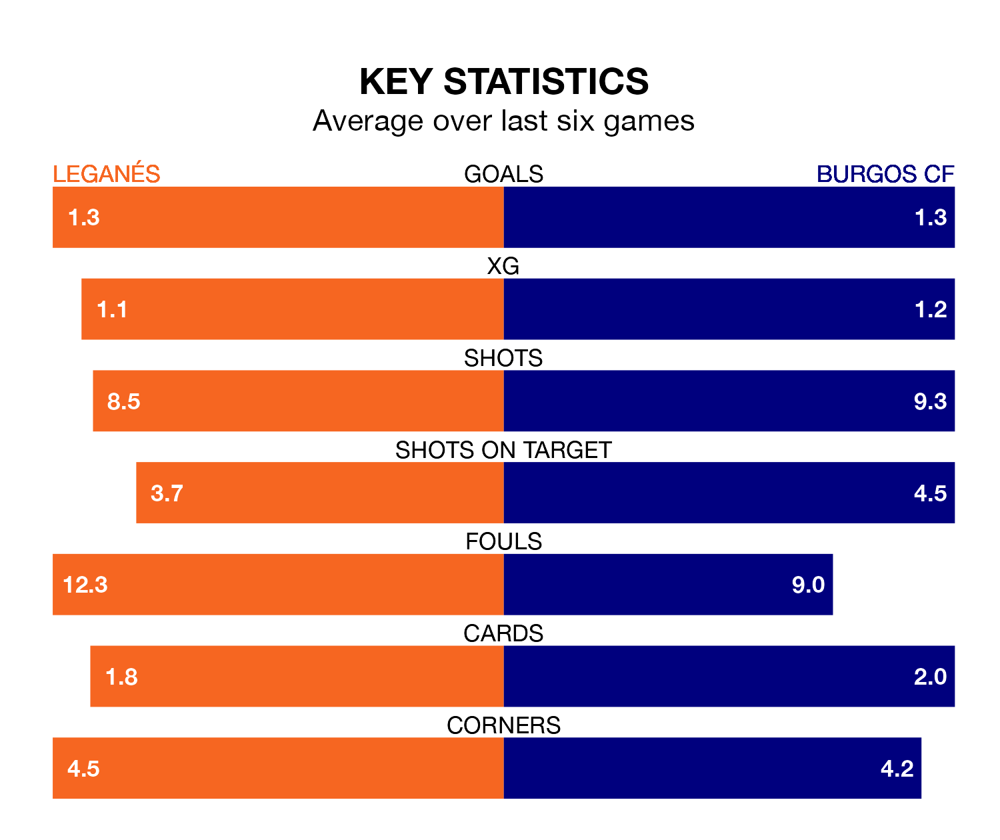

Burgos CF face Leganés on Monday seeking to protect their formidable unbeaten run in the Segunda División.
Burgos are unbeaten in eight, with four wins and four draws, ahead of the 7.30pm kick-off.
They face a Leganés team who have won two and drawn five over the same number of games.
Leganés are top of the table after 22 games, of which they have won 12 and drawn six, earning 42 points.
Burgos are eight places behind the hosts in ninth, with nine wins and six draws putting them on 33 points.
With 34 goals in 22 games so far this season, Leganés are the league's joint-third-highest scorers with 1.5 goals per game. And they are conceding fewer than average, letting in 15 goals at a rate of 0.7 per game.
The away side are also above average scorers, with 1.4 goals per game, compared to a league average of 1.2. They have conceded 1.2 goals per game.
With José Antonio Caro Díaz between the sticks, Burgos can rely on one of the league's safest pair of hands. He has kept nine clean sheets in his 22 appearances this season, and only one other 'keeper – Sporting Gijón's Orlando Rubén Yáñez Alabart – has been able to prevent the opposition scoring on more occasions in the Segunda División.
In Leganés's net, Diego Conde has eight clean sheets in 20 games.
In the last five years, Leganés and Burgos have played each other on five occasions. Leganés won one of them, Burgos two, and they drew twice.
On average, Leganés scored 0.6 goals and Burgos 1.0 in those matches.
Their last meeting was on October 4, when Burgos won 1-0 at home.
Leganés's last match was on January 14, a 3-2 win against FC Andorra, with Diego García Campos, Jorge Sáenz de Miera Colmeiro and Sergio González Poirrier getting the goals for Leganés.
Burgos beat Real Valladolid 1-0 last time out, on January 13, with Ander Martín on the scoresheet.
Updated: 14:53 (UTC), 16/01/24